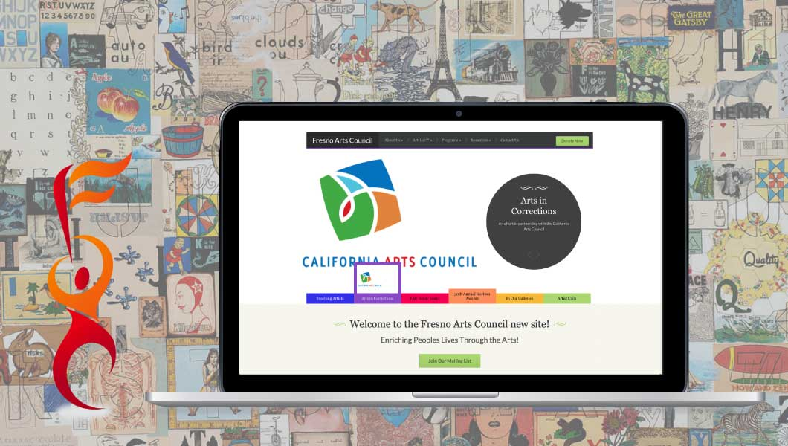

Thanks for visiting my site.
Enjoy!
I am a Front-End Web Developer for a creative agency in California who's always looking to legitimize his coding skills. I have experience creating websites using Wordpress, HTML and CSS for non-profits and private clients. I’m excited to take my skills to the next level via Treehouse's new Techdegree.
I graduated from the California State Univeristy system in 2010 with a degree in business administration. Since then I've worked as a Waiter, Non-Profit Coordinator and Marketing Director.
I am a home owner, I own three dogs and I really enjoy travelling accross the US to watch live baseball games. My life goal is to visit all MLB stadiums.
I want to master the process of designing and coding web sites and increase my knowledge, skills and abilities in:
I’d like to continue to work for a creative agency helping clients establish an impressive online presence, create solutions for their patrons, and to improve their overall organization.
Click the thumbnails below to browse my work:
